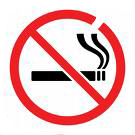

Everyday Systems: Low Smoking

Is there such a thing as moderate smoking? Isn't any level of smoking dangerous? Of course. But for those who are willing to attempt to apply moderation even to playing with the devil, here is a system with a suitably diabolical inspirational metaphor. It's called "Low Smoking." In Goethe's Faust, there's a scene it which the devil gets into Faust's lab, but can't get out, because there's a pentagram on the door with a little gap in it. He was able to get in through the gap, but then he's stuck. So I imagine a no smoking sign, one of those red slashed circles -- except with a little gap. It's a useful metaphor because it emphasizes the smallness of the permitted gap, and the danger of the forces you're messing with. It's also Grandly Literary, an amusingly incongruent but somehow still appropriate mapping to this mundane image (the no smoking sign) and problem.
I don't emphasize this system too much because I'm not sure it's replicable, though it has been very successful for me. The other reason I don't emphasize it is that non-smokers tend to get all puritanical on you if you admit any level of smoking (especially if you're posing as a health guru!) , and I'm afraid smokers will either disbelieve and resent that I'm able to trifle with such a potent devil, or be tempted into thinking it's easier than it really is, and put off seeking the stronger medicine they need.
The system works like this: no smoking except on S days. And then no more than 3 cigarettes an S-day (so even if you smoked the max every S day, which I don't advise, you'd still average less than 1 per calendar day). After several years of this, in practice, I'm down to about 1 cigarette a week (if that). From what I've read, that's insignificant in terms of health effect (but not in terms of pleasure!). I should add, though, that no study that I know off has actually looked at the effects of such low levels of smoking (presumably because no one has the willpower to do it), so it's possible that it's worse for you than extrapolating downward from available data would suggest.
That's all there is too it. Very simple. Very clear. Very compatible with the other everyday systems (S days and all). And for me, it's been very effective. But I'm not sure it will work for anyone else, so be careful.
Why do I bother smoking at all, if I've gotten it down to once a week? Why play with the devil? Because I really, really enjoy that one cigarette -- more than I used to enjoy a whole pack. Playing with the devil is very amusing, if you can pull it off.
I've also noticed that many virtuous people, even (quite vocally) professed non-smokers, smoke an equivalent amount of tobacco in cigar format. I prefer an occasional (quality) cigarette. If you want to be a snob about my choice of poison, fine. But tone down the self righteousness please.
A few related recommendations/disclosures/warnings:
- I was never a very heavy smoker. For several years, I smoked more or less daily, but (almost) never more than a pack a day, usually less than half that. By the time I started this system I was smoking much less than that (not daily, I'd smoke sporadically, the amount would slippery slope up, I'd get scared and cut down again, get complacent and it would start, etc.). It may be VERY hard, if not impossible, to go straight from heavy or even moderate regular smoking to Low Smoking.
- I'd significantly built up my store of general purpose willpower with no-s and shovelglove before I attempted Low Smoking. I don't know if I would have been able to pull it off without this preparatory conditioning.
- A good preliminary/complementary step is no smoking in the house. Other good preliminary steps might be starting with one low smoking (that is to say, No smoking) N-day a week, then 2, then 3, etc., until you work your way up to smoking only on S-days. Then start working on the count per S-day.
- Because I smoke so rarely, I splurge on fancy cigarettes (Nat Sherman's MCDs). Unfortunately because a pack lasts me so long, they're usually totally stale by the time I get to them. I wish they sold half or quarter packs (or better yet, individual cigarettes). I've become so de-addicted that if I can't get me hands on a Nat Sherman, I'm not even interested.
- I don't furtively, shamefully smoke my one cigarette a week. No sneaking off in a corner. On the contrary, I make a production of it. I have it in company with a glass of wine and a fancy chocolate (it's an S-day after all).
- As with most behaviors, I think the addict/saint dichotomy people are so fond of oversimplifies things. Thinking in terms of habit, with its degrees and directions, is more useful and more accurate and more rewarding than simple on/off, always negative addiction. Obviously this won't work with truly awful stuff like morphine, but, for me at least, it's possible with tobacco.
- For me, Low Smoking sort of a showcase for moderation. Among other things I keep it up (instead of simply quitting) to show off, if only to myself -- that I've got even a devil of this magnitude trained like a toy poodle.
Anyway, not an official recommendation, but just something that works for me. Though I've been lucky so far, don't forget that Faust's pet devil turns out to be a considerable nuisance.
Discuss "Low Smoking" here (where it was originally described -- please excuse the redundancy).
You can find an even older (and briefer) description buried in this yahoo group post.
I assume, of course, that you've already read (and re-read) this exciting disclaimer.